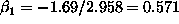

Here is a worked example to illustrate the use of the QR decomposition in solving a least squares equation.
For an matrix X, we want to find an orthogonal (length preserving) matrix Q ( ) such that , where R is a block upper triangular matrix.
Take
then if Q is such that
you can verify that

which is block upper triangular as required.
To solve the least squares equation

we can equivalently solve
Take for example

then

So  and .
The residual is of length  , so that the
RMSE =
, so that the
RMSE =
Orthogonal matrix have the propery that , so that is equivalent to , which is the way one usually sees the QR decomposition.
To summarize, the objective is to decompose a matrix X as where
X is , Q is and R is  upper
triangular, with Q orthogonal.
upper
triangular, with Q orthogonal.
The S-Plus code to produce these matrices is availble as qr.q.